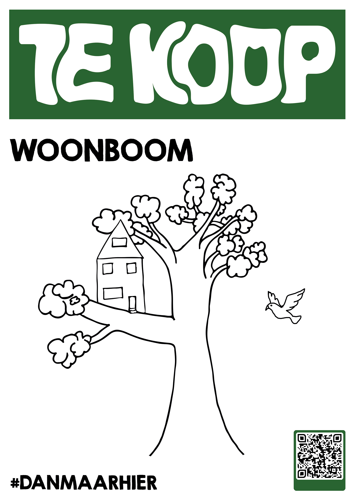
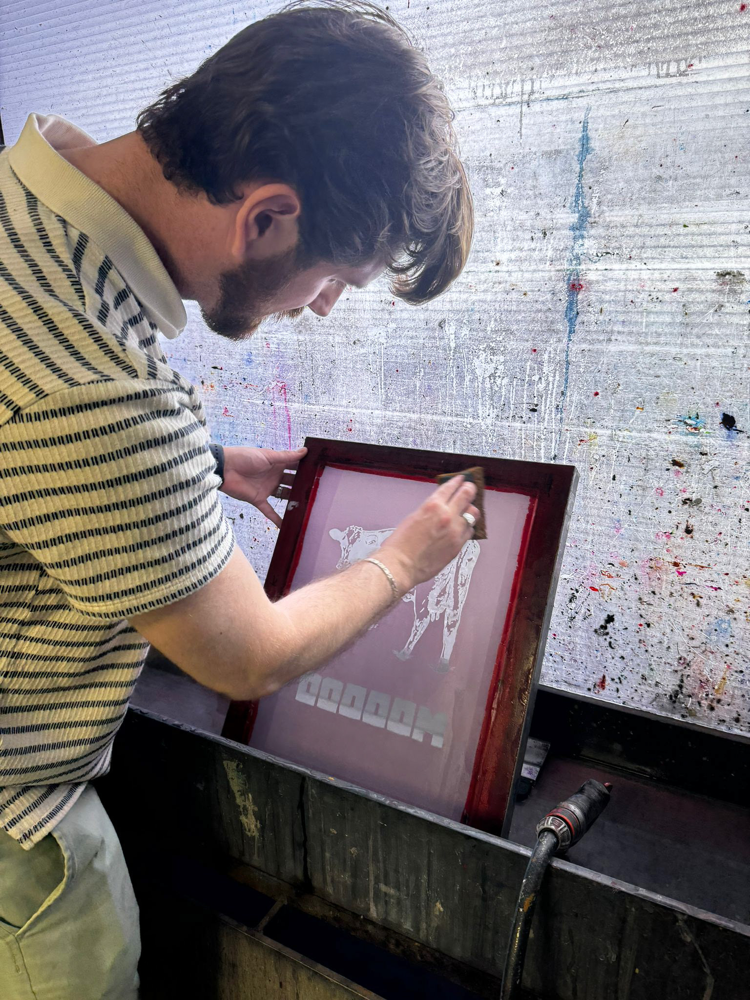

Bomby Bird
Retro-inspired arcade action, game physics & custom 3D character illustrations.
[ Immersive Maker & CMD Designer | Delft, '97 ]
Bridging the gap between physical woodworking, tactile craftsmanship, smart-home engineering, and immersive digital experiences.
Retro-inspired arcade action, game physics & custom 3D character illustrations.

A battle for our oceans. Game Jam 2025 at Beeld & Geluid.

Custom built operational arcade claw machine engineered from scratch.

Translating classic analog photo heritage into modern visual design.

Curated CMD archive & direct appointment scheduling integration.

Rapid 7-day physical tabletop game prototyping and wooden catapults.

Digital painting celebrating nostalgic OldSchool RuneScape gaming culture.

Visual narrative design focusing on character, atmosphere & mood.

Fostering human connection and play through interactive spatial installations.

Streamlining student coaching and academic guidance touchpoints at HU.

Bold visual identity and graphic design for martial arts promotion.

Hand-pulled screen printing, custom apparel & high-contrast poster art.

Welcome to my digital chaos, glad you're taking a peek!
As you might've guessed, my name is Casper (Delft, '97). I study Communication and Multimedia Design (CMD) at Hogeschool Utrecht. While my roots are deeply grounded in physical craftsmanship—woodworking, electrical wiring, and horticulture—I combine that hands-on maker mindset with digital interaction design.
In my workshop, I'm currently crafting a custom wall system inspired by the iconic Poul Cadovius Royal System using birch and falcata multiplex, floating seating with precision French cleats, and smart-home lighting automation. Digitally, I run my own Linux AI Homelab hosting autonomous agents (which helped reconstruct this portfolio!).
I also run an active gaming community of 150+ members, organize events, screen-print apparel, design jewelry with a goldsmith, and build spatial installations. My goal? Crafting immersive experiences that pull people completely out of reality.
Send a message directly to my terminal. All inquiries are routed securely.